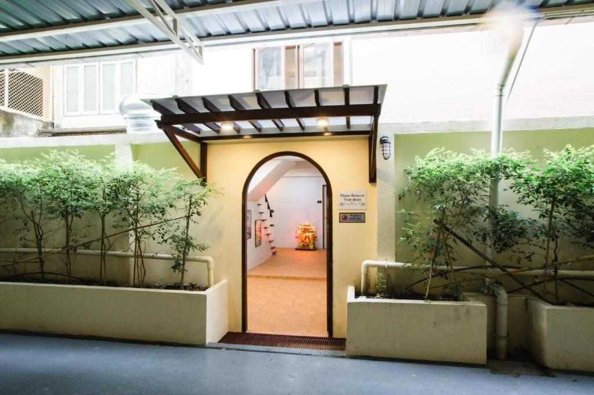

ภาพถ่ายจริงจากที่พักHouse of Happiness อยู่ย่านคลองสาน ฝั่งธนบุรี ริมแม่น้ำเจ้าพระยา — มาได้ทั้งจากสุวรรณภูมิและดอนเมือง หน้านี้สรุปทุกวิธีพร้อมราคาและเวลาจริง
* เวลาและค่าใช้จ่ายโดยประมาณ ขึ้นกับสภาพจราจร — ต้องการให้ช่วยเรียกรถ แจ้งเราได้เลย